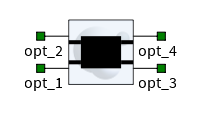

Optimized 50/50 2x2 MMI - C band TE
| Name | Type |
|---|---|
| opt_1 | Optical Signal |
| opt_2 | Optical Signal |
| opt_3 | Optical Signal |
| opt_4 | Optical Signal |
| Name | Default value | Default unit | Range |
|---|---|---|---|
name Defines the name of the element. |
MMI_2x2_TE_c | - | - |
enabled Defines whether or not the element is enabled. |
true | - | [true, false] |
description A brief description of the elements functionality. |
Optimized 50/50 2x2 MMI - C band TE | - | - |
prefix Defines the element name prefix. |
MMI | - | - |
model Defines the element model name. |
MMI_2x2_TE_c | - | - |
library Defines the element location or source in the library (custom or design kit). |
::Custom::BB84_Custom_CML | - | - |
| Name | Default value | Default unit | Range |
|---|---|---|---|
version |
1.0 | - | - |
| Name | Default value | Default unit | Range |
|---|---|---|---|
delay compensation |
0 | - | [0, 100] |
| Name | Default value | Default unit | Range |
|---|---|---|---|
wavelength_range |
C-band (1530 - 1565 nm) | - | - |
polarization |
TE | - | - |
| Name | Description |
|---|---|
| diagnostic/response #/transmission | The complex transmission vs. frequency corresponding to the ideal and designed filter. |
| diagnostic/response #/gain | The gain vs. frequency corresponding to the ideal and designed filter. |
| diagnostic/response #/error | Mean square error comparing the frequency response of the designed filter implementation with the ideal frequency response. |